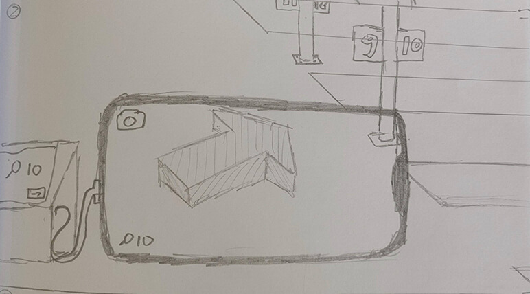
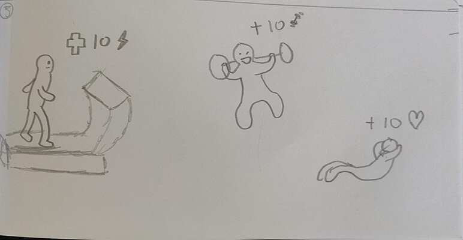
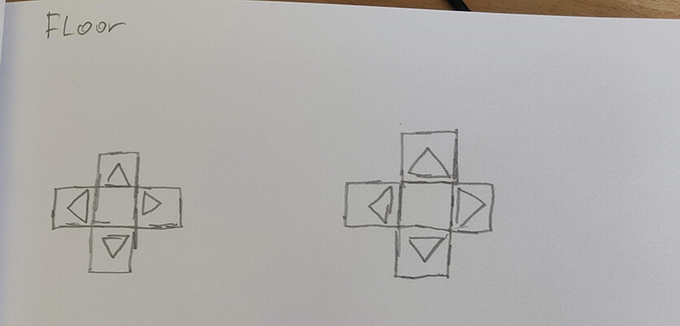
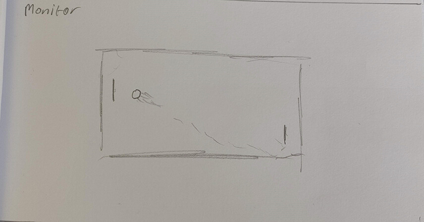

AR & VR
To write a text about augmented and virtual reailty, we first need to look at what these terms mean. So let's start with augmented reality, this is basically digital objects being show in
the real world using camera's or other sensors. An example of this is google's Floom, which shows what's on the other side of the world.
Virtual reality is an experience in which you, as the user, get put in an alternative reality using VR-goggles. The options with VR are really endless, because you are litteraly put in an
alternative dimension. There are already a lot of famous examples, the most commonly know being games for the Oculus Rift.
Looking for fields to use AR or VR in, I started with healthcare. To help new surgeons get job experience before starting with a real job, working on real people and having to face real obstacles with life-threatening situations, we should offer them a chance to practice. Dolls could fulfil this role, but having to throw away a doll every time someone makes a mistake is a bit of a waste. For this we could create a virtual reality “game” in which surgeons (or people interested) could start learning how to operate on human bodies. To make this as realistic as possible they should use gloves, which fit around their hands and fingers, as controllers which should give as much control in the “game” as possible. Inside the game they can perform operations in a situation as closely resembled as the real experience. This way new doctors can get job experience before starting their jobs in real hospitals.
The second field would be public transport. When you’re walking around in a train station, you often see, primarily elder, people wandering around with a confused look on their face, or looking around with a bewildered look, or even just looking at their phones. These people are lost, they don’t know were to go. Big, busy stations can be quite the confusing place. So we should create an application, but also screens on the stations, with which people can search for the track they need to be on. The application will show an arrow on your camera in which direction you need to walk, or a line on the ground. This way people can easily find directions and don’t have to go trough trouble or fear of missing the train.

The third and last field would be sports. Do you have trouble going to the gym? Do you wake up in the morning and think “I’ll pass today, maybe tomorrow”? Well no longer, because with this new AR installation which you can run on your phone, you can make going to the gym a game. This application will show you your progress during exercise, but instead of just saying you burned calories, it’ll give you experience and you can level up your character (which is you yourself) just like in RPG games. This will make the gym a more fun experience, because you start seeing it as a game.

Research
Link to application used for textWhile searching for interesting projects using AR or VR I came across an application developed by NYU Tandon School of Engineering’s program. Developed by three students named Heng Li, Jacky Chen and Mingfei Huang, this application has the ability to detect and translate sign language. It also has a function to put text to sign language. This way conversations between a person who speaks using sign language and someone who doesn’t can be more personal then just exchanging texts via phone or paper. You can look at each other (although trough a phone screen} and have a conversation that way. This will give mute people the opportunity to feel more as a participating member of society. I personally really like this project because it can make our society more accessible for people who aren’t “normal” according to standards.
Wearables
So what are wearables? Simply put, wearables are digital tools that you can carry with you by wearing them on your body
Fellas, have you ever been talking to your girl and suddenly everything just goes completely sideways? For whatever reason she walks away, calls you a pig and doesn’t talk to you for the next couple of days. I believe everyone has had those moments, but fear no longer. Our new technology is the solution for you. Just give your girl one of our beautiful necklaces and hook it up to your smartwatch. Without her knowing it, you’ve now got the key to your girl. Our technology is capable of detecting brainwaves using a chip at the back of the necklace. When our chip detects that the wearer is getting angry (or happy) it’ll give a signal on your watch which shows the emotion the wearer is feeling, or close to feeling. This can be used wherever, whenever. The only thing needed is the necklace on a wearer and your smartwatch. The chip has advanced neurotechnology which detects brainwaves from the brain stem. Our necklaces come in many different kinds, just like any jeweller you’ve visited, this is to make sure the girls don’t get suspicious after seeing all the other girl wear the same necklace.
Research
Wearable project for arduinoWhile searching for some interesting wearable technology I came across this guy who made a tool for blind people. Starting this project, the creator Muhammed Azhar wanted to make a tool which blind/visually impaired people could use which wouldn’t cost them a lot of money or a lot of trouble. What he did was hook Arduino’s distance sensors up to a instalment which you can put on your arms, hands, knees, etcetera. When something (a wall or object for example) comes to close to the sensors, they will start to beep like parking sensors on a car. This way blind people get feedback via audio which helps them navigate around. The total cost of this project is less than $25 which is incredibly cheap seeing what it can do.
Artifical Creatures
Artifical Creatures are basically computers programmed in such a matter that they seem to act on their own. You could make a robotdog which can move on it's own, or make a software which shows a goose walking around on your screen, following your mouse.
Using the homeostasis model, we are going to take a look at a bicycle and see what needs this device has for the best performance. The primary function of a bicycle is to be used to cycle of course, so what needs does a bicycle have for cycling? Well first of all it needs wheels and with the wheels come inflated tires. The wheels won’t really move on a flat area without a chain to give the wheels a spin, but the chain won’t do anything without pedals which a user can use to spin the chain. To keep all this together there needs to be a frame and to control the frame there needs to be a handlebar. If you combine all these things you’ve got the primary needs of a bicycle. All these needs together form the bicycle, but it won’t move of its own, it will need external stimuli and actions to change its basic shape/behaviour. One of those actions is a user pedalling. This action will cause the chain to start turning, which will start moving a wheel on the bicycle. This will create a forward motion and if the user is pedalling fast enough, the bicycle will start moving forward. Another example is a user using the handlebar to steer the bicycle. By pushing the handlebar’s left side forward the front wheel will start rotating towards the right, causing the bicycle to move towards the right. Without a user taking care of the bicycle, it will slowly start to rust and show signs of age. During cycling the user is at an almost hundred percent of control. The bicycle is a kind of pet, trained to answer to it’s users every want, the only moment of freedom a bicycle gets is when it starts going downhill and the speed picks up so much that the brakes don’t function anymore.
Research
Article used for Artifical CreaturesWhile searching for cool projects regarding artificial creatures I came across the Pepper robot, which is a project started by Softbank Robotics. This robot is designed to be the first social humanoid robot. It was designed for human interaction and engaging with people in conversation. I find this project really cool because it can be used very versatile. Some examples would be using it in a hospital to help people, giving emotional support or directions, using it in stores as a replacement of customer service, et cetera.
Playful Interaction
Playful Interaction is interaction using a tool with which users can interact. The interactions caused by this are primarily for fun or they encourage something positive
To increase positive behaviour within the main THUAS building, we need to make an installation in a place where positive behaviour is at it’s lowest. This place being the elevator, people in elevators just stare awkwardly around them till they are at the correct floor. Well I’ve got a solution for this. Introducing Elevator Pong, by placing 2 gamepads on the ground in an elevator, hooking a monitor up to the wall and running Pong on it. During the short ride to the correct floor, 2 players can play against each other. This way, instead of an awkward interaction, people can have fun together and connect with each other during this interaction.
 Research
Website about the drugsbox Website about the projectWhile searching for playful interaction projects I came across this project by Pepijn van Bakel commissioned by AVANS Hogeschool. I don’t really know if this fits in the description of Playful Interaction but on his website he calls it so. His project is called the drugsbox, for men who want to experiment with drugs. His goal for this project was to raise awareness for drug abuse and other problems that come with drugs. He wanted to achieve this by showing how easy it is to get drugs (in the Netherlands) and by creating a shock-effect. By making drugs such a ‘normal’ thing (so normal that you can get it in a mystery box) he wants to make it more accepted to talk about drugs. The playful part is the kind of mystery, it’s weird that you can order a box full of drugs, but it’s also kind of fun. But as I also indicated at the start of this paragraph, I don’t really know what the play-aspect is in this concept, I couldn’t find any information on why it’s specified as playful interaction.